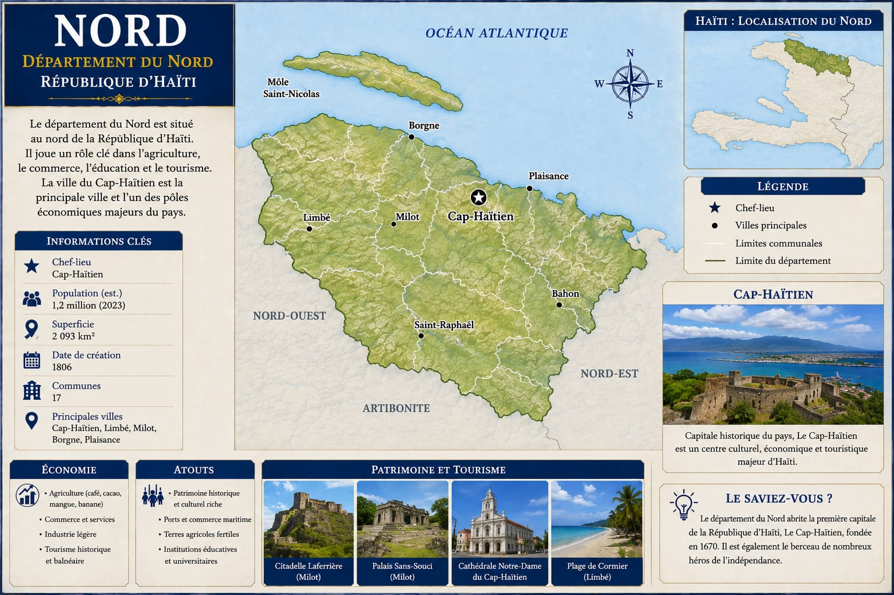

Berceau de la bataille décisive de l'indépendance et site du plus grand monument du monde caribéen post-colonial, le Nord est aussi le deuxième pôle urbain et économique du pays.

*Chiffres à confirmer avec l'IHSI avant publication finale.
Cap-Haïtien — l'ancien Cap-Français, fondé en 1670 — fut la capitale de la colonie de Saint-Domingue, surnommée le « Paris des Antilles » pour son faste colonial. Aujourd'hui deuxième ville du pays, elle demeure un pôle économique, culturel et historique de premier plan, avec un patrimoine notable comme la cathédrale Notre-Dame et la plage de Cormier.
C'est aux abords du Cap, sur les hauteurs de Vertières, que se joue le 18 novembre 1803 la bataille décisive de la guerre d'indépendance : les forces de Jean-Jacques Dessalines y infligent une défaite déterminante à l'armée expéditionnaire française, ouvrant la voie à la proclamation de l'indépendance six semaines plus tard, le 1er janvier 1804, à Gonaïves.
Quelques années plus tard, le roi Henri Ier (Henri Christophe), qui règne sur le royaume du Nord d'Haïti, fait édifier deux monuments majeurs : le Palais Sans-Souci à Milot, résidence royale, et la Citadelle Laferrière, forteresse construite sur les hauteurs pour prévenir tout retour d'une force coloniale — un chantier titanesque mobilisant des milliers de travailleurs, achevé vers 1820.
Le Parc national historique — Citadelle, Sans-Souci, Ramiers, qui réunit ces sites, est inscrit au patrimoine mondial de l'UNESCO depuis 1982. La Citadelle Laferrière, souvent présentée comme la plus grande forteresse des Amériques, reste l'un des symboles les plus puissants de la souveraineté haïtienne conquise.
UNESCO · 1982Citadelle Laferrière, Sans-Souci, centre historique du Cap — un potentiel touristique international encore largement sous-exploité.
Plages du littoral nord (Cormier, Labadie et environs), déjà fréquentées par certaines lignes de croisière.
Plaines agricoles autour du Cap et vers la Plaine-du-Nord, cultures vivrières et fruitières.
Deuxième ville du pays, le Cap constitue un contrepoids économique naturel à la concentration sur Port-au-Prince.
Réseau routier et accès aérien international limitant le développement du tourisme patrimonial à grande échelle.
Vulnérabilité aux ouragans et à l'érosion côtière, avec des conséquences directes sur l'agriculture et les zones littorales.